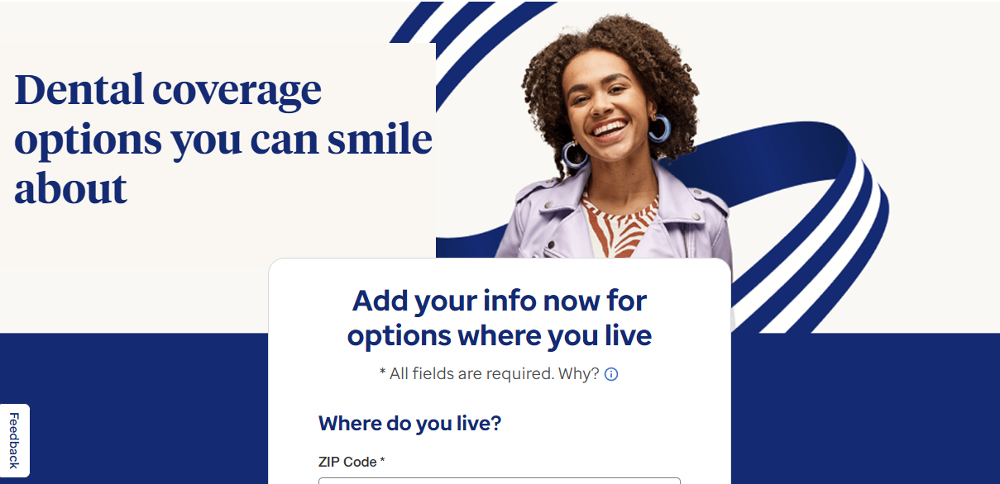

Personalization starts with a useful signal
Signals like product interest, geography, lifecycle stage, return behavior and campaign intent can all help, but only when they explain a real decision point in the journey.
Personalization CRO Service
Personalization works when it captures what a visitor is trying to do, then uses that signal to make the next step clearer. I help teams find those signals, design the experience, and prove the lift before scaling.
Click a focus area to see how a signal becomes a stronger user experience instead of another targeting rule.
Signals like product interest, geography, lifecycle stage, return behavior and campaign intent can all help, but only when they explain a real decision point in the journey.
A good personalized experience removes confusion, shortens the path, changes the proof or sets the right expectation. It should feel helpful, not clever for its own sake.
Personalization creates maintenance cost. I help teams prove the upside with a clear primary metric, clean control, and enough analysis to understand whether the signal should become part of the product experience.
Signals like product interest, geography, lifecycle stage, return behavior and campaign intent can all help, but only when they explain a real decision point in the journey.
A good personalized experience removes confusion, shortens the path, changes the proof or sets the right expectation. It should feel helpful, not clever for its own sake.
Personalization creates maintenance cost. I help teams prove the upside with a clear primary metric, clean control, and enough analysis to understand whether the signal should become part of the product experience.
A practical package that connects audience insight, experience design, testing discipline, and scale planning.
A review of the behaviors, data fields, campaign sources, and funnel moments that reveal what visitors are trying to do.
Experience concepts that use the signal in a visible, helpful way, from product pathing to expectation setting and message relevance.
A clear control, hypothesis, primary metric, guardrails, and segment readout so the test can answer the business question.
Guidance on which winners should be hardcoded, monitored, extended to adjacent journeys, or kept as limited tests.
UHOne example use cases
These UHOne experiments show the shape of strong personalization work: capture the visitor's intent or context, use it to reduce friction, then validate the business impact with a controlled test.
A global sticky nav let high-intent users express product preference earlier, creating a faster path and a signal for downstream relevance.

A Census-informed Dental experience made the page feel more relevant to the user's context before they continued deeper into the form path.

A dynamic availability message used Census context to set better expectations before users reached a confusing product list.

Personalization is strongest when the team has meaningful signals but no clear way to turn them into a better user path.
Visitors show product intent before the funnel catches up. People reveal what they want, but the site still treats every journey the same.
Your data exists but does not change the experience. Geography, source, lifecycle or behavior signals sit in reports instead of helping users decide.
Your team has a personalization tool without a testable strategy. The platform can target users, but the opportunity model is unclear.
Winners are hard to scale. You see lift in one context but need a system for deciding where the signal applies next.
A focused process that moves from signal discovery to validated experience design.
Identify the visitor behaviors, data points, and journey moments that could support a more relevant experience.
Translate the signal into a concrete page, message, product path, or expectation-setting change.
Run the use case against a clean control and analyze whether the signal improves the business outcome.
Turn validated experiences into a rollout plan, monitoring approach, and next wave of adjacent tests.
These services pair naturally when the team needs sharper diagnosis, stronger execution, or more internal capability.
It includes finding the highest-value audience or product-intent signals, deciding how those signals should change the experience, and validating the change with a controlled test before it scales.
The work starts with customer behavior, not a tool rule. I look for signals that explain what someone is trying to do, then design a targeted experience that helps them move forward with less friction.
Not always. Many teams can start with their A/B testing platform, existing audience data, or simple intent capture. A dedicated platform only makes sense when the opportunity and maintenance cost justify it.
Each experience is tested against a clear control with a primary metric, runtime guardrails, and segment-level analysis. The goal is to prove the signal helps conversion before the team invests in scaling it.
Winners are turned into a scale plan that covers where the experience should live, how it should be monitored, and which adjacent audiences or pages should be tested next.
If your site already knows something useful about the visitor, personalization can help that signal earn its keep.
Talk through your audience strategy